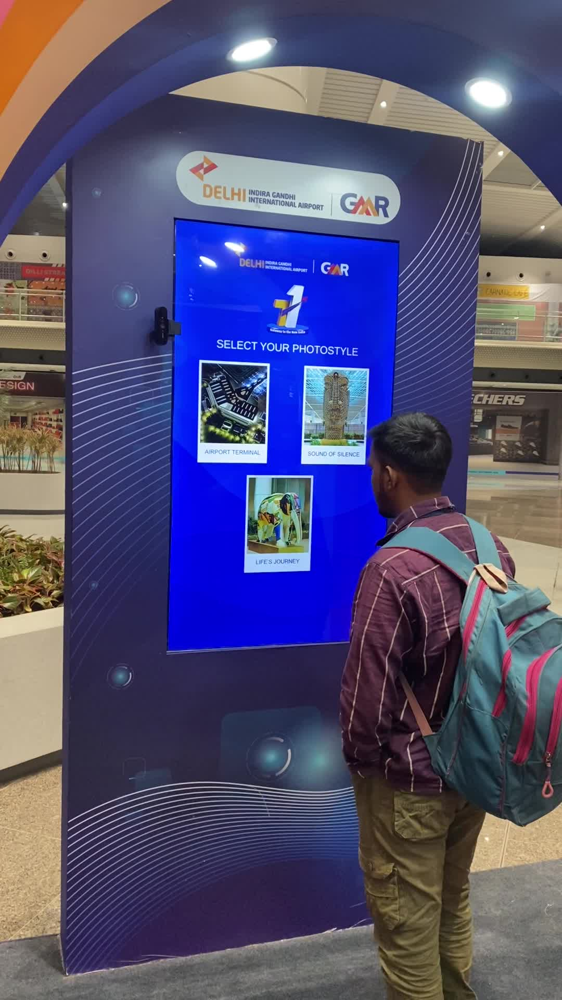
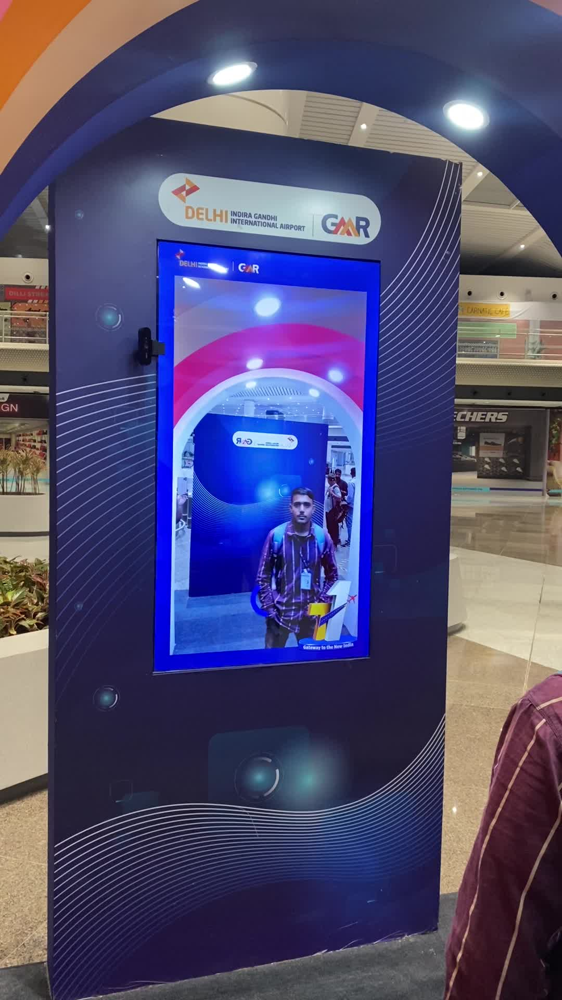
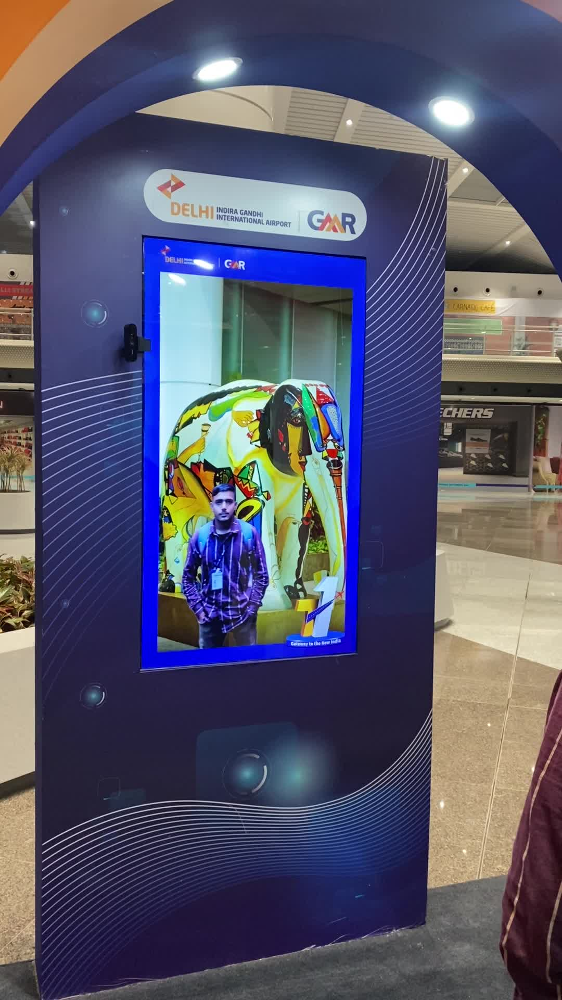

AI-driven photobooth kiosks deployed at major Indian airport hubs and brand venues. Travellers and event attendees walk up, get photographed, pick a style, and receive an AI-generated portrait themed around iconic local visuals or branded experiences. Several deployments live across multiple venue types.
AI photobooths are vertical-screen touchscreen kiosks that integrate live photo capture, on-device or cloud AI portrait generation, and themed output. A person walks up, the kiosk captures their image, they select a style or theme, and a stylised AI-composited portrait is returned in seconds. Designed for unattended use in high-traffic public spaces.
The Terminal 1 photobooth offers three photostyle themes: Airport Terminal (the new T1 architecture), Sound of Silence (an iconic sculpture at the airport), and Life's Journey (cultural Indian artwork). A traveller stands in front of the kiosk, taps a style, the camera fires, the AI runs, and within a few seconds they see themselves composited into the selected scene. They can scan a QR code to receive the image.



A different deployment, same underlying platform. The "Take Your Pledge" kiosk was built around Indian patriotic theming, Independence Day and Republic Day brand activations at GMR airport plazas. Visitors fill in their name, email, and phone, take a photo, and the system returns a stylised personalised pledge card that they can share or print.
On the surface "photobooth" sounds trivial. The actual engineering work is in everything around the AI: